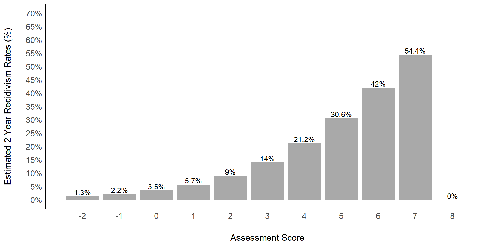
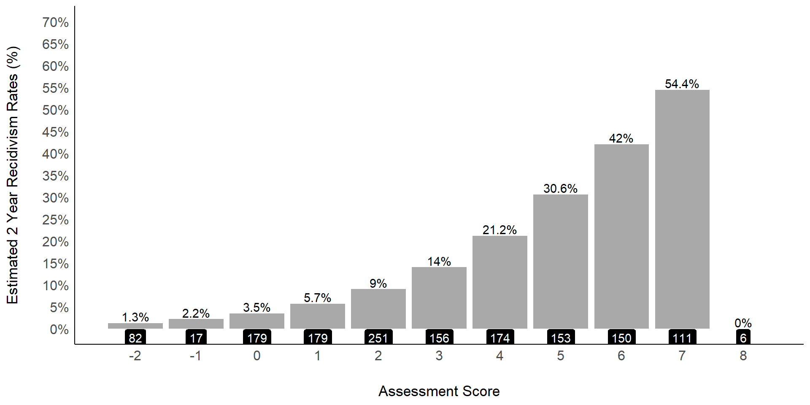
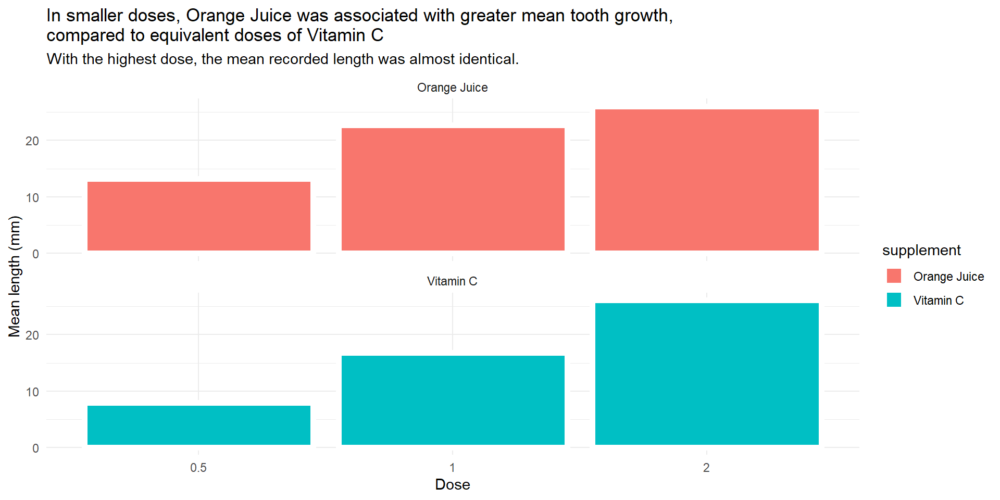

[1] "C:/Users/gcook/Sync/Data/wai_juror"Estimating Recidivism Risk from Data Visualizations:
Accurate or Illusory
Gabriel I. Cook, Daniel A. Krauss, & Lukas Klapatch
| Plot | Unweighted | Weighted |
| n | 34 | 29 |
| AvgScore_Risk | 20 | 25 |
| Plot | Unweighted | Weighted |
| n | 34 | 29 |
| Score_Risk | 9.75 | 10.00 |
NFC AvgScore_Risk Score_Risk JuryJudge
NFC 1.00000 0.04904 -0.02331 -0.1716
AvgScore_Risk 0.04904 1.00000 0.27070 0.1634
Score_Risk -0.02331 0.27070 1.00000 0.1999
JuryJudge -0.17160 0.16341 0.19992 1.0000# A tibble: 3 × 7
# Groups: PlotType [3]
PlotType NFC_n NFC Commit AvgScore_Risk Score_Risk n
<chr> <int> <dbl> <dbl> <dbl> <dbl> <int>
1 default 1 0.0539 0.324 19.8 9.97 34
2 noplot 1 -0.0231 0.292 NaN NaN 24
3 size 1 0.163 0.448 29.3 12.3 29x
you are all data minded. You all work with data.
You know that there are many ways to represent data
Bar plots, scatterplots, etc.
xx
A decision to represent data represents a commitment to communicating certain elements of a story.
Bar charts for example are typically used to represent some point estimate of the data for example the mean.
Bar charts are sometimes decorated with information that communicates variability around that point estimate.
For example there may be confidence intervals, error bars, or even the data points that make up that point estimate.
Because data visualizations cannot be too cluttered, some elements must be chosen to visualize whereas others will be selected against. In many cases, all of the data in a data set are not presented. Rather data are distilled down to a point and interval estimate and present in some visual or tabular form. My talk today is not designed to judge in any way, it is just to communicate how we, as experts, often present data.
What out of whatever that is presented in visual form is a particular constraint, which is the visual system.
The way which the visual system operates influences how we attend to, perceive, and process information.
Experts Communicating Data
Certainly we are all experts trying to communicate our data with our research.
In the courtroom, there also experts who try to communicate data in a simplified form to jurors.
Of course, the way that information is communicated to jurors can influence their decisions.
Juror Decisions with Data
Others
In a simulated sexual violent predator hearing, we examined how mock jurors interpret and use recidivism risk expert testimony communicated either categorically, using verbal labels, or probabilistically, using numeric values. Based upon the STATIC-99R, we compared mock jurors’ decision-making and verdicts when we manipulated the style of risk communication across four different risk levels. In terms of verdict decisions, we found that higher risk levels were associated with more commitment decisions, but that this relationship only existed for the categorical risk-communication format. We also replicated previous research demonstrating that participants overestimate recidivism risk in general, especially when higher risk is communicated categorically. Finally, our participants did not differentiate well between the four levels of risk offered, instead apparently employing a more simplistic dichotomy between “low” or “high” risk for both their verdict decisions and their thresholds for commitment. The legal and policy implications of our findings are discussed, as well as suggestions for more effective presentation of expert risk testimony.
Data
In that study, risk was communicated probabilistically and categorically. The entire data set was not communicated.
Risk was communicated probabilistically and categorically
Essentially as point estimates
Point estimates don’t communicate uncertainty
bxxxx
So building off of this particular project we set out to present recidivism rates in visual form.
Rather than providing mock jurors with information about the labels, we presented recidivism rates in the form of scatterplot
What is a scatterplot?
okay this is rhetorical.
A scatter plot
Theory
Effective visualizations like scatterplots communicate data by leveraging fast and accurate visual processes. Scatterplots map two data dimensions to position [8, 77], a precise channel for comparing values [2, 14, 51]. They also leverage our ability to summarize sets of point marks through ensemble processing mechanisms [6, 35, 87, 93]. Ensemble processing helps readers easily intuit how data points are distributed, allowing judgments about summary statistics such as correlations [39, 72], position means [34, 92], and clusters [1]. While ensemble perception is fundamental to visual data comprehension, it has limitations that can also interfere with effective communication. Recent work in vision science suggests that visual channels corresponding to common design elements, like size or color, may systematically bias our abilities to estimate the mean position of a small collection of point marks [26, 74, 83]. These limitations could manifest in common visualization techniques like line charts—which lead to underestimation of means [96] and overestimation of trends [90])—and scatterplots.
The Role of Data Visualizations
Just as we know that the characteristics of experts and what they communicate can systematically bias jurors, data visualizations may do so also.
The scatterplot mapping the risk assessment score with recidivism rates communicates a few things.
First, the most prominent characteristic of the plot is likely that the height position of the points tends to increase from left to right.
You don’t need to look at the labels of the axes to perceive this trend.
This trend also communicates variability or uncertainty in the recidivism rates. In other words, they are not constant.
Second, looking more carefully, you see that the recidivism rate as plotted on the y-axis tends to increase as the score on the assessment increases. in other words, the assessment score predicts recidivism rates.
The plot also communicates that recidivism rates have some range to them, on this plot anyway starting at near zero and extending upward to xx.
At some point you may even wonder where these rates came from because one will either recidivate in some period of time or they may not.
And thus, how long are these time periods?
Would plot look the same or different for recidivism occurring in 2 years or 5 years? That of course depends on whether someone who does recidivate always does so within the first two years. Some may do so in year 4.
that one might extract is the trend (Gestalt?)
Feature based attention
the centroid method defines a weight function called an attention filter, a model of feature-based attention our ability to attend items with specific visual features more or less than other items which may cause the bias toward larger darker points. The attention filter corresponds to the visual quote weight of individual marks
The position mean is a reliable behavioral marker for studying featurebased attention in vision science [83] and information visualization [34]. Feature-based attention implies that attention is unevenly distributed across space, skewing towards marks with certain visual features [12]. The attention filters modeled with the centroid method quantify this skew [83]. When reading visualizations, we rely on feature-based attention to, for example, make judgments about different data categories [34] or search for relevant data [38].
Risk Assessment in SVP Proceedings
The most frequently used and validated risk assessment instruments in SVP proceedings are the STATIC-99 (Hanson & Thorton, 2002) and STATIC-99R (Hemus, Thorton, Hanson, & Babchishin, 2012; Neal & Grisso, 2014), which are also the most intensely studied instruments of this type (Fazel, Singh, Doll, & Grann, 2012; Singh, Grann, & Fazel, 2011). The STATIC-99R, which was used in this study, contains 10 separate items related to recidivism that produce a total score from −3 to 12 (Helmus et al., 2012). Over 60 studies, involving more than 20,000 offenders in total, have demonstrated that an earlier version of this instrument moderately predicts sexual recidivism (Hanson & Morton-Bourgon, 2009. Yet, almost no empirical research has investigated how different forms of risk communication based on this instrument may affect juror decisions in SVP cases.
This latter result is consistent with other research on SVP decision-making suggesting that jurors may ignore or discount expert testimony running counter to their pre-existing beliefs that sex offenders are dangerous and likely to recidivate (Scurich & Krauss, 2014).
Bubble Charts
For mapping a third plot dimension
Make an Inverse Recidivism (recode) and shade
And color
Have audience Guess
 ){width=40%}
){width=40%}
xxx
Fade in > Turn red > Semi fade out
Two-Year Observed and Estimated General Recidivism Rates for xxxx

Canadian Sample
Based on BARR-2002R
Recidivism Rates used for creating averages for materials
Recidivism Rates by Assessment Score (Blais et al., xxxx)


Summary
- Mean Score is 3
- Median Score is 3
- Mode Score is 2
Two-Year Observed and Estimated General Recidivism Rates for BARR-2002R
Blais, Babchishin, & Hanson (2021), Table 2S
| Score | Cases | Recidivate | Observed | Predicted |
|---|---|---|---|---|
| -2 | 82 | 1 | 1.2 | 0.013 |
| -1 | 17 | 0 | 0.0 | 0.022 |
| 0 | 179 | 6 | 3.4 | 0.035 |
| 1 | 179 | 10 | 5.6 | 0.057 |
| 2 | 251 | 27 | 10.8 | 0.090 |
| 3 | 156 | 15 | 9.6 | 0.140 |
| 4 | 174 | 33 | 19.0 | 0.212 |
| 5 | 153 | 39 | 25.5 | 0.306 |
| 6 | 150 | 54 | 36.0 | 0.420 |
| 7 | 111 | 59 | 53.2 | 0.544 |
| 8 | 6 | 3 | 50.0 | 0.000 |
Blais Recidivism Rates
0 1458 total cases
19.4818 19.5% average recidivism rate (n = 247)
Our data
Dropped out Score 8 (no prediction/only 6 cases)
726 data points (half of 1452)
Presented in a scatter plot
Points represent “averages” in locales
Recidivism Rates Bar
Recidivism Rates by Score
{.absolute top=200 left=0 width=“350” height=“300”}


[1] VC VC VC VC VC VC VC VC VC VC VC VC VC VC VC VC VC VC VC VC VC VC VC VC VC
[26] VC VC VC VC VC OJ OJ OJ OJ OJ OJ OJ OJ OJ OJ OJ OJ OJ OJ OJ OJ OJ OJ OJ OJ
[51] OJ OJ OJ OJ OJ OJ OJ OJ OJ OJ
Levels: OJ VCRecidivism Corresponding to Defendant’s Score


Hong & Witt (2021) and Weighted-Average Illusion
Mean position estimates were biased toward locations of larger and (to a lesser extent)
Our results show that the perceived mean of a scatterplot is biased towards larger or darker points (H1). We have labeled this bias the weighted average illusion because the bias can be explained by asymmetries in weights we assign to marks based on irrelevant properties like size and color. We found that these effects were robust to training and increased as the structure in the data and range of size or lightness increased (§5). Bias always increased as correlations between position and the third data dimension increased. This bias was directed toward areas of larger or darker points and, in the strongest conditions, caused people to misread the average by 35 pixels, supporting H2. Widening size ranges also affected bias as correlations increased, partially supporting H3. While these effects were stronger for size than lightness, they demonstrate the predictability of this bias as a function of data patterns and design choices (Figure 6).
The position mean is a reliable behavioral marker for studying featurebased attention in vision science [83] and information visualization [34]. Feature-based attention implies that attention is unevenly distributed across space, skewing towards marks with certain visual features [12]. The attention filters modeled with the centroid method quantify this skew [83]. When reading visualizations, we rely on feature-based attention to, for example, make judgments about different data categories [34] or search for relevant data [38]
However, if feature-based attention was the only factor at play, we would see the same attention filters in each correlation condition, varying only as a function of increasing size or lightness ranges. Instead, we found that the attention filters varied with increasing correlations in the data as well, indicating there is more to the observed bias than simple pop-out effects. People may alternatively be using subsampling or density-driven strategies (Figure 8). We discuss these strategies below as both potential explanations for the observed bias as well as opportunities to inform future designs.
The weighted average illusion adds to the growing literature of biases [3, 11, 23, 24, 69, 90, 96] that may affect interpretations of even the most familiar visualizations.
xxxx
Separability is the the ease with which our visual system can process one visual channel without interference from another ([32, 62, 91])
Sometimes easy: color and position
Sometimes difficult
channels are separable, since our perception of position is robust to changes in color, and vice versa. But when visualizing data using red hue values for one measure and blue hue values for another, people will struggle to process each measure independently [91].
Position has been considered separable from all other channels.
Position may be integral with some channels for more complex visualization tasks [19, 51]. For example, position is integral with motion in outlier detection in multivariate scatterplots [89].
See Recent studies provide formal models of separability across color, shape, and size for comparing data values [22, 80, 85], See Smart and Szafir (2019). Measuring the separability of shape, size, andcolor in scatterplots. In Conference on Human Factors in Computing Systems - Proceedings, pp. 1–14. Association for Computing Machinery, New York, New York, USA, may 2019. doi: 10.1145/3290605.3300899 [Szafir]9https://ieeexplore.ieee.org/stamp/stamp.jsp?tp=&arnumber=8017604) Dakin, Tibber, Greenwood, & Morgan (2011)
but we lack formal models for the separability of position with other channels in perceiving means and distributions.
Redicivism Estimates
Improving our Risk Communication: Standardized Risk Levels for BARR-2002R
References
- Blais, J., Babchishin, K. M., & Hanson, R. K. Improving our Risk Communication: Standardized Risk Levels for BARR-2002R. Sexual Abuse, ….
Questions
Are estimates of recidivism extracted from plots accurately?
Do those estimates influence decision making even when experts provide point estimates?
Does point size influence estimates of recidivism?
Do estimates
Do estimtates correlate with
Visualizations


output location 1
Design
Independent Multigroup Design
No Vizualization
Same Size Scatter
Bubble
Plot Range
Min
Max
We investigated whether the average position location of points in a scatterplot is influenced by encoding point size as a third dimension in data visualizations (e.g., bubble charts). When estimating the average position of points along an axis, larger points can bias estimations of average in the direction of those larger points. We investigated whether this weighted-average illusion occurs in a real-world scenario involving mock jurors’ estimates of recidivism risk. Of special interest was the degree to which the illusion influences jurors’ commitment decisions especially in the presence of an expert’s testimony, which included an actuarial mean-point estimate of risk.
Going to sleep
- Get in bed
- Count sheep
Conference Program Summary
We investigated whether the average position location of points in a scatterplot is influenced by encoding point size as a third dimension in data visualizations (e.g., bubble charts). When estimating the average position of points along an axis, larger points can bias estimations of average in the direction of those larger points. We investigated whether this weighted-average illusion occurs in a real-world scenario involving mock jurors’ estimates of recidivism risk. Of special interest was the degree to which the illusion influences jurors’ commitment decisions especially in the presence of an expert’s testimony, which included an actuarial mean-point estimate of risk.
Conference Abstract
Expert testimony concerning risk and its communication has important implications for legal decisions. Previous research has shown that recidivism risk-presentation format can influence mock jurors. In a simulated sexual violent predator hearing, Krauss, Cook, and Klapatch (2018) investigated how the format of risk communication can influence mock jurors’ decision‐making and verdicts. Risk communication was category-based using verbal labels (e.g., “low”, “high”) or probability-based using median probabilistic point estimates of risk predicted for each category label (e.g., low = 13%, high, 43%). Higher risk levels were associated with more commitment decisions but that this relationship only existed for the category-based risk‐communication format.
Data summaries involving point estimates, however, lack communication of variability also present in the data. Whereas an individual’s actual recidivism in binary, the likelihood of an individual’s predicted recidivism risk in actuarial terms is estimated based on the data of many individuals. Point-estimates of risk provide information about average recidivism risk, typically without regard to uncertainty or variation in risk. Scatterplots represent one form of data visualization that can represent all data and from which viewers can extract summary information. The presentation format of such visualizations can introduce cognitive challenges for the view, which may also bias perception and interpretation.
Scatterplots map two data dimensions to a single position in Cartesian-coordinate space yet take on a diverse range of design variations (Sarikaya & Gleicher, 2018). For example, points may differ in aesthetic (e.g., color, size, shape) based on group membership or some other variable, either enhancing or compromising perception. Changes in the size of scatterplot points can bias estimates of point position in the direction of larger points, resulting in an illusion referred to as the weighted-average illusion (Hong et al., 2022).
this url
Step 1
- Split slides up with level 2 headers:
## Heading 2 - Add some markdown + text and/or some R/Python code
Some R Code
[1] 4Slide Title
- one
- two
Make this slide Red
Making a Slide Incremental
Say you want to reveal the content of slide piecemeal without rewriting separate slides with previous content.
Then add some content…
Then some more content
Omit This Slide {visibility = “hidden”}
Add links
- First item
- Second item
Fragments
Fade in
Fade out
Highlight red
Fade in, then out
New Section
Fragments, nesting
Fade in > Turn red > Semi fade out
Fragments, spans
This is an important sentence!
Mind the gap when riding the rail!
Columns
Column layout
contents…s
contents…
Case Background
The defendant (person who is the subject of the civil commitment in this case), James Stone, is currently 30 years old. He was born in Kansas but grew up in Phoenix, Arizona. Mr. Stone has been diagnosed with a learning disability. In 2012, he was sentenced to 5 years for a sexual offense. From 2012 to 2017, James Stone served his prison sentence. While in prison, Mr. Stone successfully completed a two-year long cognitive behavioral Sex Offenders’ Treatment Program (SOTP) designed to reduce his likelihood of recidivism. Recidivism simply means a tendency for Mr. Stone to re-offend. As part of his treatment, he admitted to having committed another act of sexual misconduct (he was never arrested for or convicted of the incidence), and completed treatment related to this act as well. Upon completion of his sentence, he was transferred to the Arizona mental hospital to await his current civil commitment proceedings.
Decision
“As the petitioner in this case, I am not required to prove to you with absolute certainty that, if released into the community, Mr. Stone will commit a sexually violent offense. I am only required to prove that there exists a more likely than not chance that Mr. Stone will commit a future sexual offense. I must caution you though that the majority of sex crimes are committed in this country are not reported. In other words, many sex crimes go unreported and we have no way of knowing how many are actually being committed by sexual offenders released into the community. The law only requires that you find the defendant is likely to commit a future sexually violent offense; not that he is likely to be arrested for one.”
“I will ask you to render a verdict that Mr. Stone does in fact meet the criteria for civil commitment of a sex offender and that he must be committed to a State facility for treatment.”
Recidivism by Assessment Instrument
Petitioner: Based upon the research, what does the instrument tell you about recidivism risk?
Dr. Brent: The data over decades can be summarized using a visualization for the Static-99R scores and their corresponding estimated risk rates of recidivism. The points on the plot show average recidivisim rates for different cities. Overall, you can see that higher scores on the Static-99R correspond to greater risks of recidivism in a 2 year period.
Then Visualization: A, B, or None
Mr. Brent: Looking at this visualization, the members of the jury can estimate the average risk of recidivism in 2 years.
Recidivism for Specific Assessment Score
Petitioner: Now, based upon the research and how this instrument is utilized, what is the corresponding recidivism estimate for Mr. Stone’s score?
Dr. Brent: His score on the Static-99R is the most common score, which is 2. Although all individuals scored the same on the Static-99R, some happened to recidivate in 2 years and some did not. Members of the jury should focus specifically on recidivism rates for individuals with a score of 2.
Then Visualization: A, B, or None
Expert Opinion
Petitioner: Do you have an opinion specifically as it relates to Mr. Stone as to the relative degree of risk he poses to commit sexual offenses if he is released into the community? That is, would you believe to a reasonable psychological certainty that he has a likelihood to recidivate?
Dr. Brent: The law asks us to make a determination as to whether a person is likely or not likely and my opinion based on the instrument. For those individuals assessed with a Static-99R score of 2 as did Mr. Stone, the average likelihood of risk in the next 2 years is approximately 9%.
NOTE: All Ps informed of 9% recidivism risk.
Petitioner Closing Statement
Petitioner: I am not requiring you to say to yourselves, “I have to decide with 100 percent certainty that Mr. Stone is going to go back out on the street and sexually offend against others.” That is not your burden or mine. My burden is to prove to you beyond a reasonable doubt that his paraphilia predisposes him to commit such crimes if he is released into the community – not that he will, but only that he is likely to. The law doesn’t require that you figure out how many times Mr. Stone might be arrested. In the real world, as reflected in Mr. Stone’s history, many cases are not reported. The law says only, “More likely than not to commit another act of sexual violence,” and not necessarily to be convicted of one, over his entire remaining lifetime.
Commitment Decision
Arizona law provides that a person may be involuntarily committed to the custody of the Arizona Department of Health Services if that person is found beyond a reasonable doubt to be highly likely to commit future sexually violent acts. To decide this, two conditions apply: One, one who has been convicted of a sexually violent offense; and two, he has a mental disorder that makes it likely he will engage in future acts of sexual violence. The State must prove both of these elements beyond a reasonable doubt or you must find that he is not a sexually violent person….
As a member of the jury, based on the information presented in the hearing materials, do you have “beyond a reasonable doubt” that Mr. Stone is more likely than not to commit a future sexually violent offense?
Minimum Recidivism for “Beyond Reasonable Doubt”
MinNumEst Minimum numerical risk estimate of recidivism in the next 2 years that the expert would have to provide for you to decide that you have proof “beyond a reasonable doubt” recidivism.
MinNumEst_2 What is the minimum risk of recidivism in the next 2 years that the expert would have to provide for you to decide that you have proof “beyond a reasonable doubt” that Mr. Stone will commit future sexually violent offenses?
MinNumEst_3 What risk level would the expert have to provide for you to decide that you have proof “beyond a reasonable doubt” that Mr. Stone is will not commit future sexually violent offenses in the next 2 years?
RiskVal2Label What descriptive label best represents your own interpretation of recidivism for future sexually violent offenses in the next 2 years for someone described as having a ${e://Field/RiskValue} of recidivating.
RiskNumEst(s) Level 1 (very low), Level 2 (below average), Level 3 (average), Level 4 (above average), Level 5 (well above average): For each, what is the minimum “likelihood” that you believe best represents the chance of someone committing sexually violent offenses again in the next 2 years as described with the labels below. Use the slider to select a value from 0% to 100% for each label.
Data Visualization
How accurate are Ps recidivism estimates?
Does a bubble chart lead to a weighted average?
Does a plot influence commitment decisions?
Do
Design
Independent Multigroup Design: No Plot, Scatter, Bubble
Dependent Variables:
– Overall Recidivism Estimate (Scatter & Bubble)
– Score 2 Recidivism Estimate (Scatter & Bubble)
– Commitment Decision: Yes or No